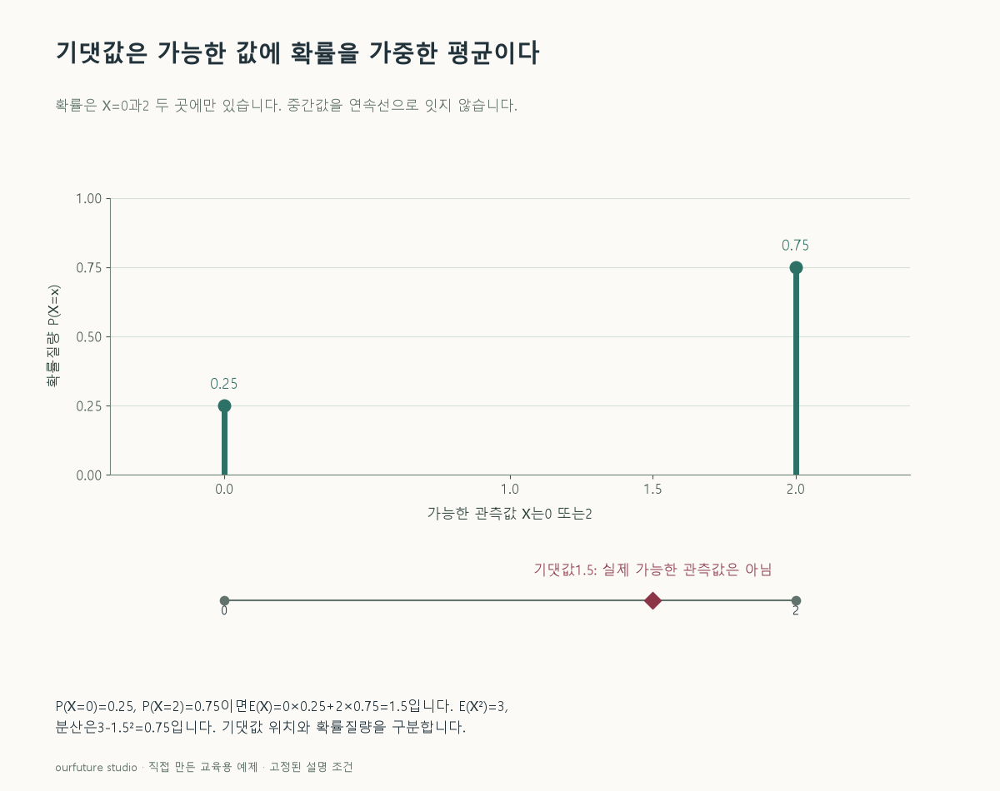

핵심 이론
이산확률변수의 기댓값은 각 값에 그 값이 나올 확률을 곱해 더한 것이다. 확률들이 0 이상이고 합이 1인지 먼저 확인한다. 가능한 값이 0과 2라고 해서 평균을 항상 1로 계산하면 안 된다. 2가 더 자주 발생하는 분포에서는 가중된 중심도 2 쪽으로 이동한다.
분산은 μ=E(X), 즉 기댓값을 중심으로 한 제곱 거리의 평균 E[(X−μ)²]다. X가 0일 확률 0.25, 2일 확률 0.75라면 μ=1.5이고, 제곱 거리를 같은 확률로 가중해 0.25×(0−1.5)²+0.75×(2−1.5)²=0.75를 얻는다. 지름길 공식 E(X²)−[E(X)]²로도 E(X²)=0²×0.25+2²×0.75=3이므로 3−1.5²=0.75다. 기댓값과 분산의 단위는 각각 원래 단위와 제곱 단위다.
모든 값에 같은 상수를 더하면 평균은 그만큼 이동하지만 값들 사이의 편차는 변하지 않아 분산은 유지된다. 반면 값을 상수배하면 분산은 그 상수의 제곱배가 된다. 이 규칙은 계산을 검산하는 데 유용하다. 기댓값은 가능한 관측값 중 하나일 필요가 없고, 한 번의 시행에서 반드시 나오는 값도 아니다.
확률이 같다는 것은 단순평균과 기댓값이 같아지는 충분조건이며 필요조건은 아니다. 자체 반례로 값0·1·2에 확률0.25·0.5·0.25를 주면 단순평균도1이고 기댓값도1이다. 반면 아래처럼 값0·2에 서로 다른 확률을 주면 기댓값1.5와 단순평균1이 달라진다.
작은 예제로 확인하기
분포를 직접 지정한 자체 확률변수다.
| X | 확률 | X×확률 | X²×확률 |
|---|---|---|---|
| 0 | 0.25 | 0 | 0 |
| 2 | 0.75 | 1.5 | 3 |
열을 더하면 확률 합은 1, 기댓값은 1.5, 제곱의 기댓값은 3이다. 1.5가 실제 가능한 값 0·2 사이에 있어도 문제가 없다.
그림으로 확인하기

직접 고르기
P(X=0)=0.25, P(X=2)=0.75다.
E(X)와 Var(X)는?
- 1. 1과 1
- 2. 1.5와 3
- 3. 1.5와 0.75
- 4. 2와 0.25
정답과 오답의 이유 확인하기
정답 3번 — 1.5와 0.75
E(X)=0×0.25+2×0.75=1.5, Var(X)=3−1.5²=0.75다.
- ① 두 가능한 값의 확률이 같다고 계산했다.
- ② E(X²)=3과 분산을 혼동했다.
- ④ 자주 나오는 값 2를 기댓값으로, 확률 0.25를 분산으로 읽었다.
조건 하나 바꾸어 풀기
Y=X+10으로 정의하면 E(Y)와 Var(Y)는?
풀이: 11.5와 0.75
전체 위치만 10 이동하므로 평균은 10 커지고 편차의 제곱 평균은 유지된다.
다시 떠올릴 단서
값에 확률을 곱해 더하고, 제곱의 평균에서 평균의 제곱을 뺀다.
근거와 적용 조건
- Penn State STAT 414: Mathematical Expectation — 8.1 expectation・8.4 variance（검색 제공 본문 확인, 직접 URL 재시도 timeout）. 확인일 2026-10-30.
- SciPy rv_discrete.expect — Description의 이산분포 기대값 합산. 동일확률 필요조건 오류는 자체0·1·2 반례로 재계산. 확인일 2026-10-30.
상황·수치·보기·조건 변경은 자체 교육 예제다. 민간 복원 문항의 공식 정답이나 실제 성능·학습 효과를 뜻하지 않는다.
읽은 내용을 적용해 보기
가능값0·2의 유한분포다. 불균등 확률에서도 단순평균과 기댓값이 같을 수 있다는 세 값 반례는 본문에서 별도 계산한다.